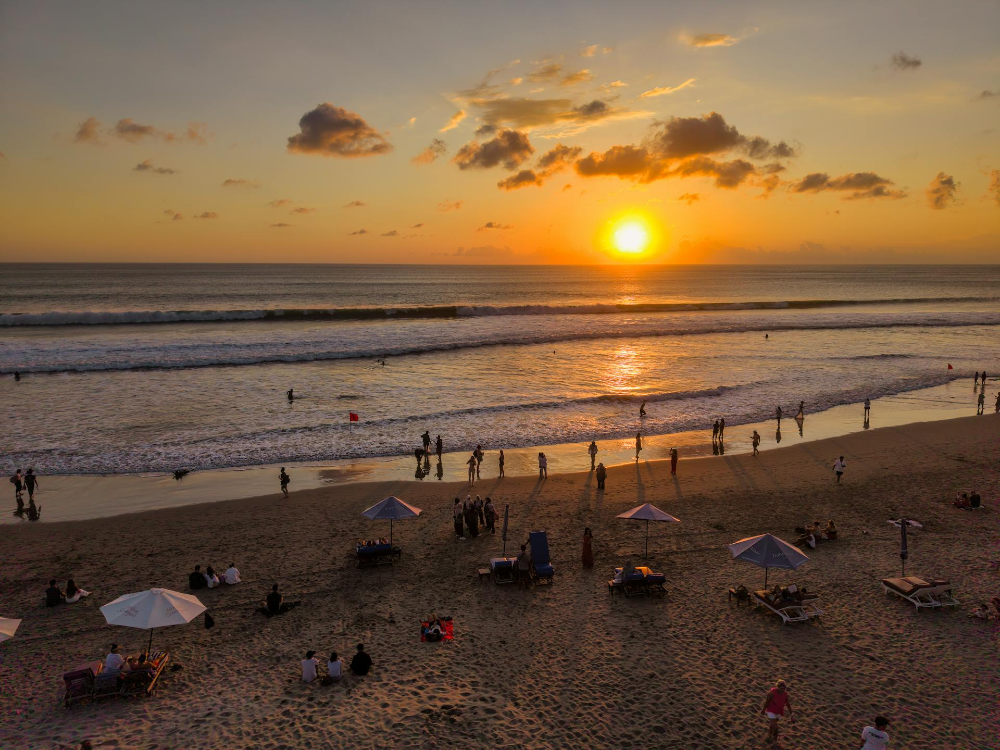
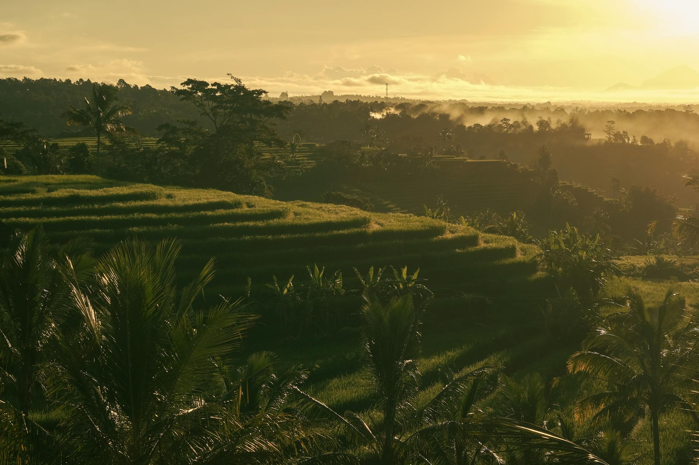
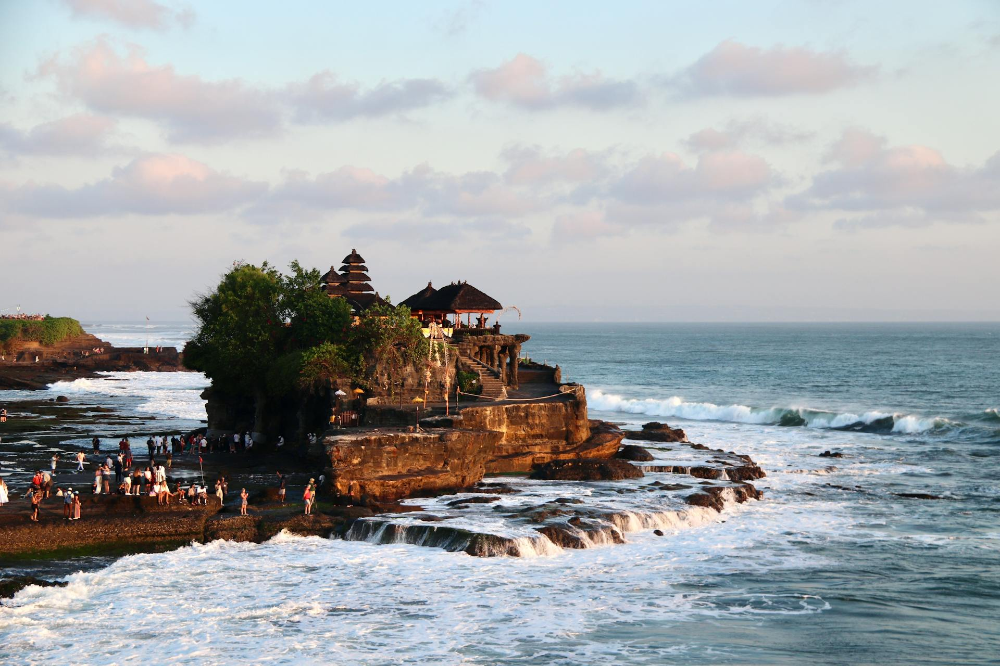
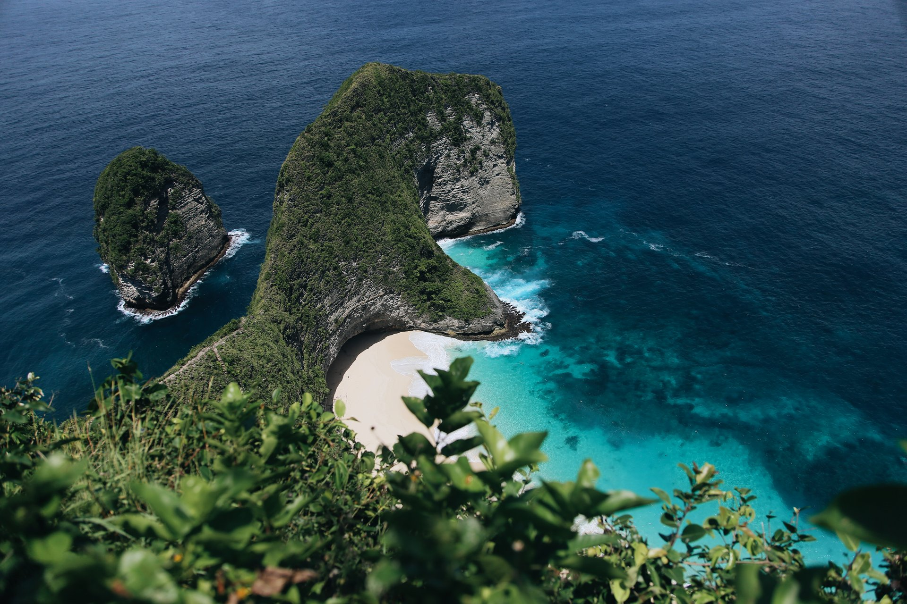

Wisata Bali
Bali adalah salah satu destinasi wisata paling populer di Indonesia, terkenal dengan pantai-pantai indah, sawah terasering, pura-pura bersejarah, dan budaya yang kaya. Berikut beberapa tempat yang wajib dikunjungi:




Tips Singkat
- Hormati adat dan aturan di pura (pakaian sopan dan mengikuti petunjuk).
- Coba kuliner lokal seperti babi guling, ayam betutu, dan jajanan pasar.
- Untuk eksplorasi pulau, pertimbangkan menyewa pemandu lokal atau mengikuti tur terorganisir.
Gunakan menu di sebelah kiri untuk melihat halaman Profil dan Kontak jika perlu informasi lebih lanjut.